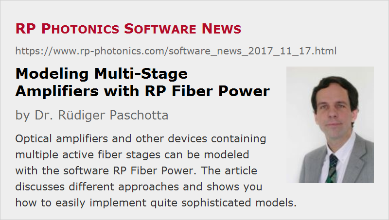

Modeling Multi-Stage Amplifiers with RP Fiber Power
Posted on 2017-11-17 in the RP Photonics Software News (available as e-mail newsletter!)
Permanent link: https://www.rp-photonics.com/software_news_2017_11_17.html
Author: Dr. Rüdiger Paschotta, RP Photonics Consulting GmbH
Abstract: Optical amplifiers and other devices containing multiple active fiber stages can be modeled with the software RP Fiber Power. The article discusses different approaches and shows you how to easily implement quite sophisticated models.

For strongly amplifying optical signals in fibers, it is often necessary to employ two or even more fiber amplifier stages. For example, one may need to filter out ASE or backward-propagating light between the stages, or one may want to use different fibers for the different stages (e.g. with larger effective mode area and cladding pumping for a power amplifier). Here, I want to share some thoughts about how to model such multi-stage amplifiers with our software RP Fiber Power. (I have already addressed similar things in an earlier posting, but here I want to present some additional ideas.)
One Script per Stage
The conceptually simplest approach is to use separate simulation scripts for the different stages, or alternatively to model them using the interactive forms. That can be an appropriate approach particularly if each stage needs to be analyzed and optimized in detail before proceeding with the next stage.
A question of practical importance can then be how transfer data between the different simulations. In a simple case, it may only be a constant signal output power from one stage which needs to be used as the input power for the next stage; you may just transfer that manually. However, there may also be a complete ASE spectrum to transfer, i.e., a whole array of power values. In case of ultrashort pulse amplification, whole pulses need to be transferred, represented e.g. with complex amplitudes in the time or frequency domain. The natural solution is to save such data into one or more files, which can then be read by the script for the next stage. That just requires a little more code, but our powerful script language allows you to save and load any data. You may even use that within interactive forms, where you can inject some script code for such tasks.
Limitations of that simple approach may be encountered in some situations:
- If some detail of the first amplifier stage is modified, you will need to manually start the simulation for subsequent stages again – which is a pain if that happens frequently.
- Making diagrams which contain outputs from more than one stage (as in Figure 1) is possible, but again requires saving and loading of data, which may be somewhat inconvenient.
- The simple approach fails in cases with mutual interactions between the stages. Imagine, for example, that backward ASE or residual pump power from the second amplifier stage influences the first stage. For calculating a self-consistent state, one can obviously no longer consider the stages separately.
One Script for Several Stages
It is indeed often required (or just more convenient) to make a single simulation script which treats more than one amplifier stage (and possibly even the seed laser, for example a mode-locked laser).
The question is then how to address the different stages with functions which do not have the index of the stage as a parameter. The solution is quite simple: you can use a function call like set_device(2) in order to tell the software that what comes next – for example, the definition of a fiber with all corresponding optical channels, or the retrieval of calculated data – refers to the second device, which may be the second amplifier stage.
Below, I show you some example code for calculating the steady state of a dual-stage fiber amplifier, where the signal goes from the first to the second stage, while some residual pump light from the second stage enters the first one (and ASE is ignored). It is assumed that the fibers and their optical channels have already been defined, and the following function can then be used to calculate the steady state:
find_steady_state(P_s_in, P_p1, P_p2) :=
begin
global allow all;
var P_s_fw, P_p_bw, NoSteps;
NoSteps := 0;
set_device(1);
set_P_in(pump1_fw, P_p1);
set_P_in(signal1, P_s_in);
repeat
inc(NoSteps);
P_s_fw := P_out(signal1);
set_device(2);
set_P_in(pump2_bw, P_p2);
set_P_in(signal2, P_s_fw);
P_p_bw := P_out(pump2_bw);
{ backward pump power left over by the second stage }
set_device(1);
set_P_in(pump1_bw, P_p_bw);
until abs(P_s_fw - P_out(signal1)) < 0.01 mW;
NoSteps;
end
I suppose that even those not having seen the manual can quite easily guess what the different elements of that code are doing. When calling that function, you tell it the signal input power of the first stage and the pump powers of both stages, and the function returns the number of iterations required to find the steady-state (which may typically be 2). Thereafter, you can retrieve any outputs, for example display the signal output powers (with 3 valid digits and units of watts) after the two stages:
calc find_steady_state(1 mW, 150 mW, 1600 mW) show "P_s1: ", (set_device(1); P_out(signal1)):d3:"W" show "P_s2: ", (set_device(2); P_out(signal2)):d3:"W"
It is also no problem to create a diagram, which for example displays the final signal output power as a function of the signal input power for given fixed values of the pump powers:
diagram 1:
"Signal Output vs. Signal Input"
x: 0, 20
"signal input power (mW)", @x
y: 0, 1500
"signal output power (mW)", @y
f: (find_steady_state(x * mW, 150 mW, 1600 mW);
set_device(2);
P_out(signal2) / mW),
color = blue
Similar things can be done in the context of ultrashort pulse amplification. You can just create a start pulse (e.g., a Gaussian pulse with given parameters, or a pulse read from a file, or the steady-state output from a mode-locked laser model in the same script) and subsequently send that through the different stages. You may prepare each stage concerning the excitation state of its laser-active ions with a continuous-wave calculation (e.g. based on the signal average power, calculated as the product of pulse energy and pulse repetition rate), or simulate repetitive amplification after turning on constant pump powers (or any other temporal profile of pump powers). You can also define a function which does certain iterative steps until the steady state is reached. These are just examples – you can essentially do whatever comes to your mind!
Scripting vs. Graphical Interfaces
Some other products (e.g. from VPIphotonics) use a totally different approach for modeling systems with multiple amplifier stages. There, you interactively place some symbols for amplifier stages on a desktop and connect them with lines symbolizing the flow of light between them. You modify details of an amplifier stage by right-clicking on the corresponding symbol and entering data in the obtained pop-up form. Further tools assist you in making diagrams, for example.
At a first glance, you may think that such a GUI approach is easier than writing a script with elements as shown above. However, while that might be true in the simplest cases, you would soon hit the inherent limitations of that approach when you need to do more sophisticated things in your R&D work. Even if the user interface is sufficiently cute e.g. to allow you the generation of diagrams where any calculated quantity is shown as a function of some input parameter, you may often need to do more complicated things which go beyond the flexibility of such a software, or at least are then quite difficult and cumbersome to achieve. (Typically, you would notice such limitation sometime after purchase, one would then be stuck without a viable solution.) Imagine that you need to further mathematically process calculated data – for example, store subsequent amplified pulses under the influence of random noise and use Fourier transforms and related stuff (like applying window functions) for calculating noise spectra. Even if the software were good enough to store the relevant parameters of your pulses in a file, it would be inconvenient to transfer all the data to some other software just for the mathematical processing. It is just the easiest if you can do everything within your simulation script.
By the way, there are some software packages having an interface e.g. for MATLAB, so that you can control the model with MATLAB (e.g. automatically change some parameters) and process the results in MATLAB. That way, substantial flexibility is added, but that comes at a price. First of all, you need to have a MATLAB license and to be sufficiently familiar with it. Second, you will have to find out how exactly to handle that interface. Third, the execution will probably be rather slow compared with our software.
Others may consider to do everything in MATLAB – another environment for calculations with scripting. That means a huge workload, however, because you will have to implement a lot of complicated optics and physics calculations instead of working on your actual problem.
For such reasons, I have decided for the scripting approach in our software, which can still be combined with interactive forms, even with user-defined forms. That gives you unparalleled flexibility and is also quite nice to use.
I am always glad to learn from our power users what cute things they have done with our software, exploiting the power of scripting. And maybe articles like that one help you (and motivate you) to become such a power user as well. I am happy to help you with my technical support.
This article is a posting of the RP Photonics Software News, authored by Dr. Rüdiger Paschotta. You may link to this page, because its location is permanent.
Note that you can also receive the articles in the form of a newsletter or with an RSS feed.
|  |
If you like this article, share it with your friends and colleagues, e.g. via social media:
These sharing buttons are implemented in a privacy-friendly way!